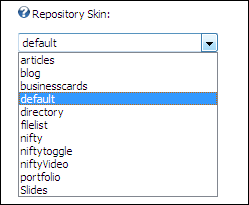

Setting the Repository Skin
How to set the skin used on the Repository module. Note: It is preferable to choose the Repository skin before uploading files to the module as changing skin changes the fields which are displayed on the upload page.
-
- Select the Repository Settings tab.
- At Repository Skins select one of these skins:
- Articles: Repository for articles. See "Overview of the Articles Repository"
- Blog: Repository for blog posts. See "Overview of the Blog Repository"
- Business Card: Repository that displays business details in a card design. See "Overview of the Business Card Repository"
- Default and Default 2: Repository for files with image previewing. See "Overview of the Default, Default 2 and Nifty Repositories"
- Directory: Repository for a list of resources that link to a URL. See "Overview of the Directory Repository"
- File List: Repository which displays a compact list of files. See "Overview of the File List Repository"
- Metro
- Nifty Toggle: Repository for files with image previewing. Similar functionality to the default skin. See "Overview of the Nifty Toggle Repository"
- Nifty Video: Repository for viewing videos. See "Overview of the Nifty Video Repository"
- Portfolio: Repository for viewing portfolio images. See "Overview of the Portfolio Repository"
- Slides: Repository for viewing images inside frames that looks like traditional slide. See "Overview of the Slides Repository"
-
Click the Update button.

Setting the Repository Skin
Related Topics:
-
"Setting the Repository Design"